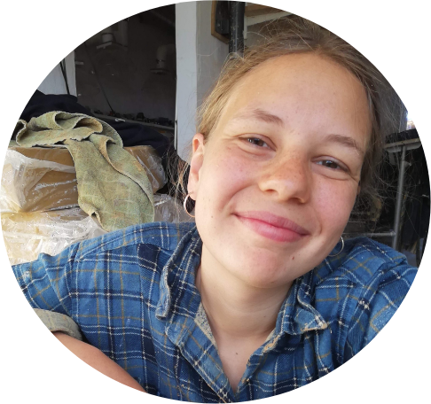

Hej! Mit navn er Lisette, jeg er 25 år og jeg eeelsker at lege med ler – både med mig selv og andre.
Jeg nyder især at lade mig fortabe i den meditative proces, det er at sidde ved en tidsslugende drejeskive.
Når jeg får ler i hænderne, går der ikke mange minutter, før min hjerne har overgivet sig til materialet, og jeg pludselig har glemt tid og sted.
Det er netop denne fordybelse, jeg elsker ved leret! Gennem min undervisning på blandt andet Ry Højskole får jeg lov til at dele min begejstring,
og det holder jeg umådeligt meget af.